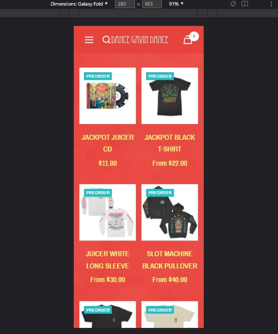

PARC: Proximity
BYUI
BYUIWorking with the alignment of the page, all the resource links are close together to allow the user to easily navigate as well as find items.
PARC: Contrast
Dance Gavin Dance
Dance Gavin Dance Band Website The contrast of the colors in the website do an excellent job of using the complementary colors of orange and aqua to lead the viewers eyes to their merchandise that they are trying to sell. Also, it helps organize the page in a way that the links to follow are separate from the clothing or music being sold.
White Space and Clean Design
Mavs Homepage
Mavs HomepageThe Mav's homepage does a decent job of creating enough padding around the articles to allow the reader to focus on the images/articles. This also give the webpage a better look of space and things look more organized due to the padding.